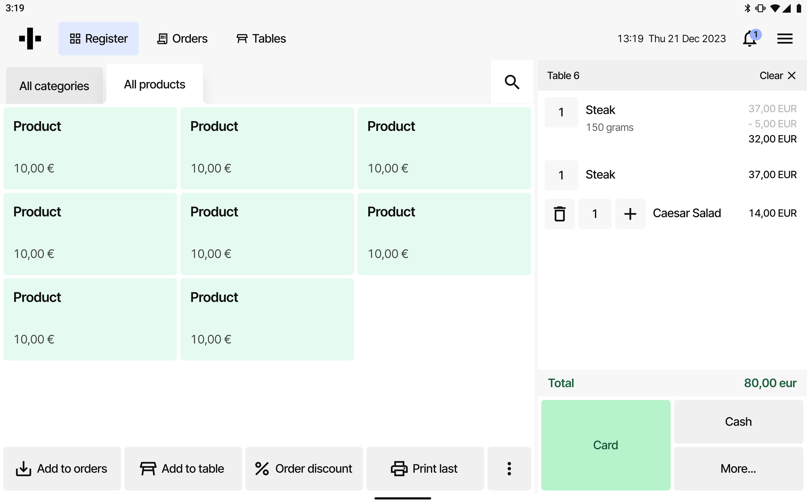
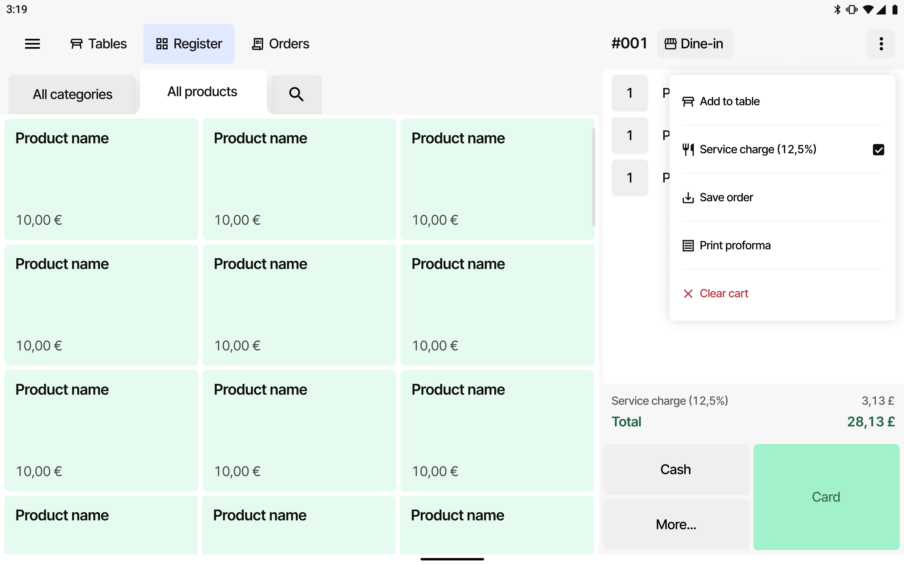
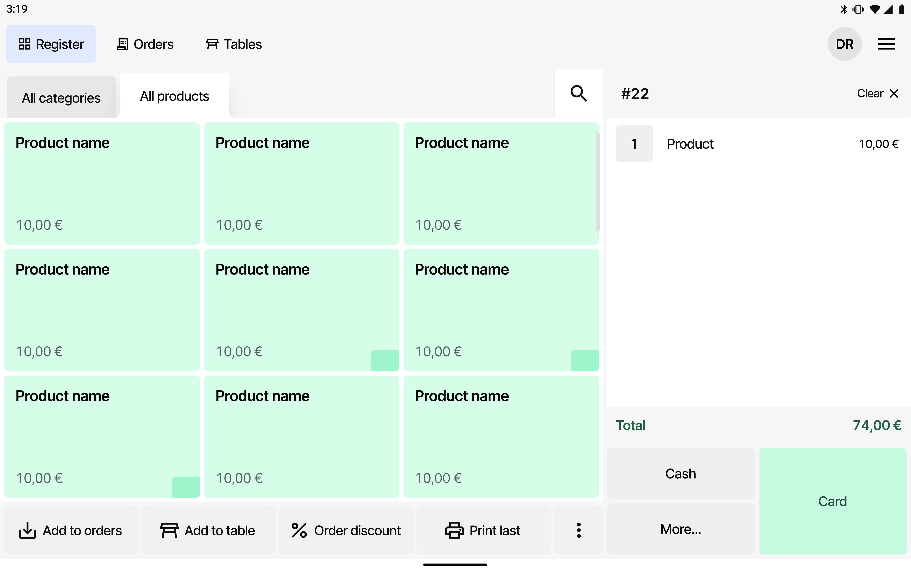
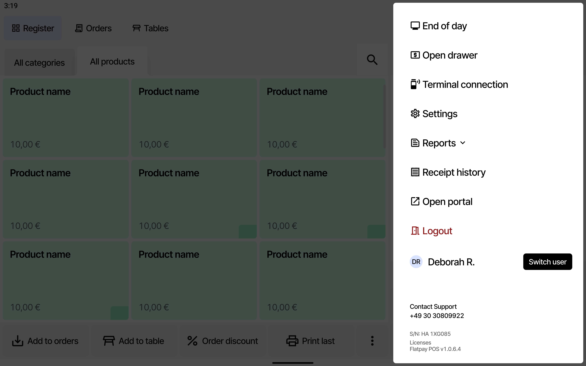
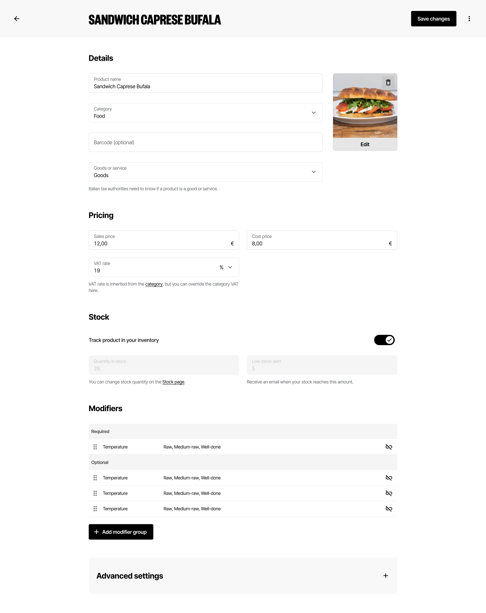

01 · Geo Expansion: Research → Feature design
Researching new markets, then designing for what they actually need
Geo Expansion is Flatpay's primary growth lever: every new market needs to activate quickly and reach meaningful transaction volume fast. To get there, the team ran in-depth merchant research in two markets ahead of launch: the UK and the Netherlands.
-
01
Research · Netherlands
2025 NL UXR Report
Part of the broader Geo Expansion research portfolio, establishing how Dutch merchants run their businesses, what payment habits and POS expectations look like locally, and where Flatpay's current product would need to flex ahead of a launch.
-
02
Research · United Kingdom
2025 UK PMF Report
Three days of cold, in-person merchant visits across Fulham Road, Hammersmith, North End Road, Covent Garden and Soho: interviews, observations and photo evidence with F&B, retail and service businesses that fit Flatpay's ICP.
Finding: PAY fits the UK market as-is. POS fits smaller venues without table service, but to compete for venues with table service, Flatpay needed service charge handling, clock-in/clock-out, and an order/transaction history tab.
From UK research to a shipped feature
-
Research
In-market merchant visits surface that UK table-service venues run on a 12.5% service charge, toggled at checkout and set centrally in the portal: a "must have" to compete.
-
Prioritisation
Findings were weighed against the launch-readiness matrix: service charge landed in the "can't launch without it" tier for both POS and Portal, ahead of nice-to-haves like clock-in/out.
-
Feature design
Designed the end-to-end Service Charge flow: manager sets the rate in the Portal, staff toggle it on/off per order at checkout, and it's reflected clearly across receipts and reports.
-
Scalable structure
Used the feature as a forcing function to rethink the POS's "all actions" area more broadly, proposing a clearer, trackable structure rather than another one-off addition.
Two of the three gaps from that visit have already shipped
Service charge handling launched first, and its design work doubled as the forcing function for rethinking the POS's catch-all "all actions" menu, the structure that had been holding five growing markets inside one unchanged kebab menu since the product's earliest days. Staff identity followed soon after, laying the foundation the clock-in/clock-out tracking from the same finding depends on.


The earlier screen had no concept of a service charge at all; staff would have had to calculate and key it in by hand, order by order. The shipped version folds the toggle directly into the restructured action list , and the 12.5% is reflected automatically in the total , the exact behaviour UK merchants called a "must have" to compete for table-service venues.


One login used to cover an entire shift, so a sale, a discount or a refund couldn't be traced back to the person who made it. Staff now switch profiles in seconds , the identity layer that clock-in/clock-out tracking, the second item on the UK list, needed to exist before it could be built.
02 · ICP Unlock: Modifiers
Designing modifiers without making the POS harder to use
Modifiers let a merchant capture how a customer wants something ("no onions," "extra cheese," "medium rare") without bloating the menu or the order ticket. It's one of the most-requested features blocking Flatpay from serving more complex merchants, and the foundation for online ordering integrations with platforms like Uber Eats and Wolt.
Design process
-
Merchant visits
Visited three Copenhagen merchants who needed the feature, to validate scope assumptions, e.g. confirming negative values and quantities weren't actually needed for v1.
-
Competitor benchmark
Mapped how Toast, Lightspeed, Square and Tebi structure modifier groups, settings and POS flows, to ground the design in patterns merchants already know.
-
Pattern-based design
Designed the Portal and POS flows by extending Flatpay's existing patterns: keeping setup and checkout familiar rather than introducing new mental models.
-
AI prototype
Built an interactive prototype of the Portal setup flow to pressure-test the concept early: see it live in the embed below.
-
Validation visit
Returned to merchants with the PM and a developer. Key learning: "min/max selection" language wasn't clear; more merchant-accessible copy tested better, even at the cost of added complexity.
The phrase that didn't survive contact with merchants
The first pass framed selection rules the way the team thought about them internally: a minimum and a maximum to configure. In the validation visit, merchants stalled on it; they didn't think in ranges, they thought in plain yes-or-no questions. Does the cashier have to pick one? Can they pick more than one? The shipped version asks exactly that, even though it costs a little more screen space than the original dropdowns.


"Minimum selection of 1" became Required, with a line explaining that the cashier must choose before continuing . "Maximum selection" became Allow multiple selections , a single switch a merchant can read at a glance. Same underlying rules, rebuilt around how merchants actually talk about their menus.
From setup to the counter, and back into daily use



Live prototype: adding a modifier group, required & toggle states
Interactive: try adding a new item to a group, and toggling required / multi-select rules. Open full prototype ↗